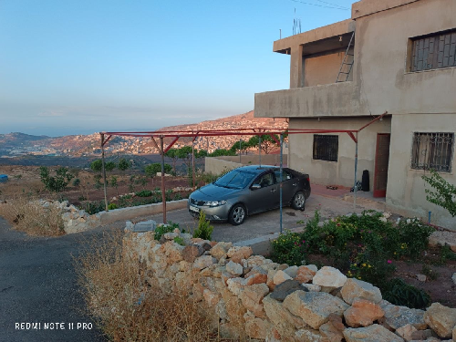

I am originally from Majdal Shams, and I live in ‘Ain al-Tineh, which is part of the Syrian section of my village under Israeli control. I also stay in Jaramana, Damascus, for university, but I love living in ‘Ain al-Tineh.